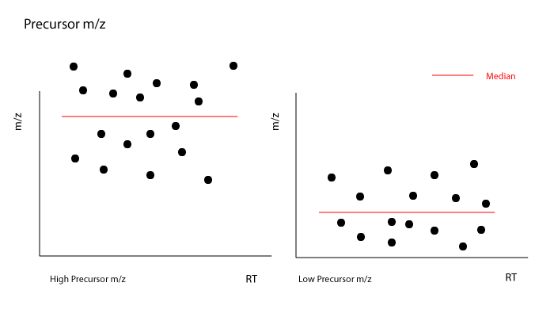

Precursor m/z is a measure of the mass/charge for the precursor ions seen in MS1.
High or low m/z may be associated with inefficient ionization.
The Precursor m/z metric is the median value of m/z for all identified spectra.

Mass over charge ratio (m/z)
Consistent
Consistent median m/z values indicate instrument stability.
The most reproducible LC-MS performance is when this metric remains in a narrow range over a series of runs. Wide variability in any metric means your process is not reproducible.
The Precursor m/z metric reports the m/z where the mass spectrometer is tuned to best detect peptides. Changes in this "sweet spot" are reflected by changes in the Precursor m/z metric.
A high value of Precursor m/z could also be caused by inefficient digestion so that there are multiple missed cleavages. Missed cleavages will result in longer peptides and thus larger Precursor m/z .
Higher values can correlate with inefficient ionization, while lower values can correlate with short, non-specific peptide identifications.
The Precursor m/z depends on the charge state of the spectra that were matched to peptides. In contrast the Percent +1H , Percent +3H , and Percent +4H metrics report on all the detected ions whether they match to a peptide or not. If these related metrics are out of bounds, but Precursor m/z isn't, then it may mean that there are an unusually large number of non-peptide ions in the sample.
If Precursor m/z is unusually small, it may be because of non-specific digestion resulted in short peptides. These short peptides might be detected in a larger than normal Percent Semi-Tryptic .
Precursor m/z also goes up if more sample is loaded. This might be because there is a higher concentration of peptides available to be chosen with a fewer charges per peptide. If this is the reason for higher Precursor m/z , then the Total Ion Current should also be higher. In general, the more potential peptides your sample contains the more accurate this metric is.